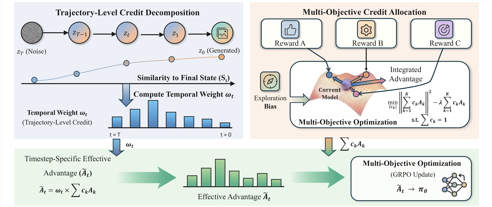
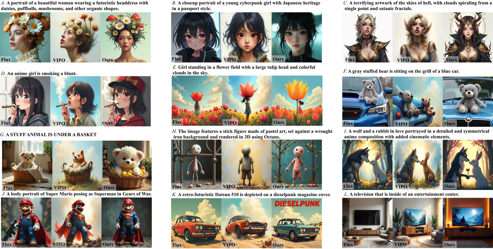
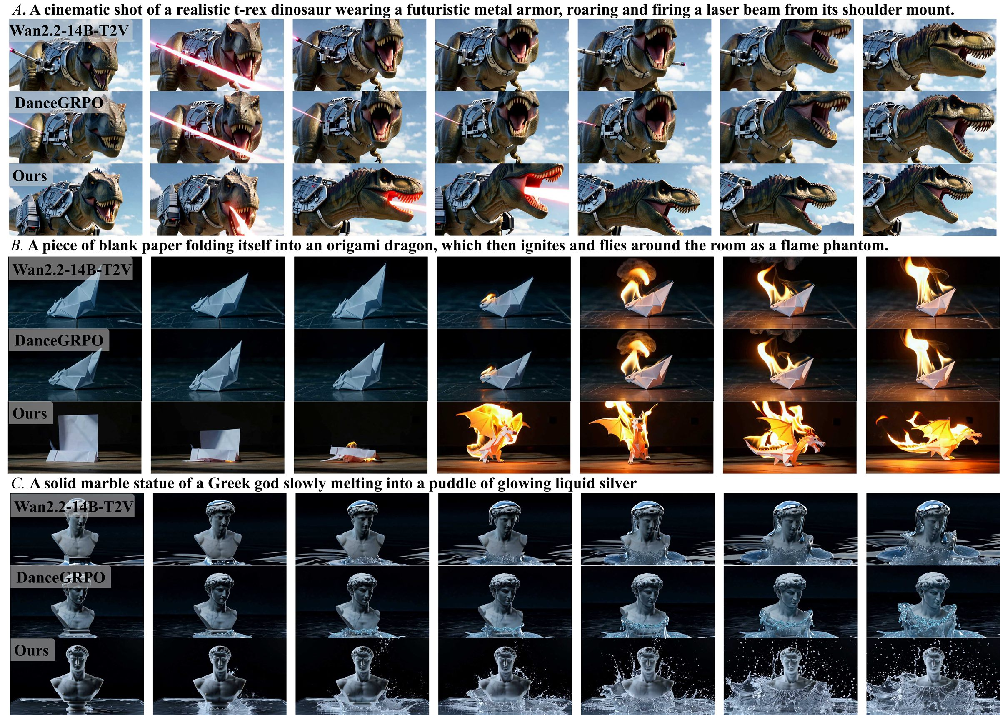
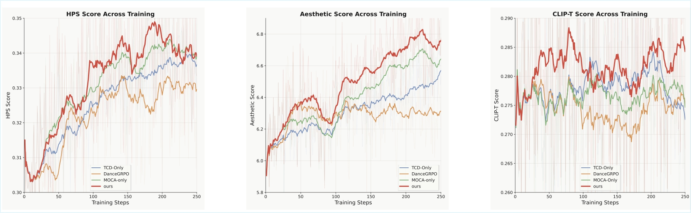

Trajectory-Level Credit
Estimates which denoising steps contribute most to the final generation quality.
Objective-aware trajectory credit assignment for post-training visual generative models.
University of Science and Technology of China | Shanghai Jiao Tong University | TeleAI
* Equal contribution
Reinforcement learning, particularly Group Relative Policy Optimization (GRPO), has emerged as an effective framework for post-training visual generative models with human preference signals. However, its effectiveness is fundamentally limited by coarse reward credit assignment. Existing GRPO pipelines often collapse multiple reward models into a single static scalar and propagate it uniformly across the entire diffusion trajectory.
We propose Objective-aware Trajectory Credit Assignment (OTCA), a structured framework for fine-grained GRPO training. OTCA decomposes trajectory-level credit across denoising steps and adaptively allocates multiple reward signals throughout the generation process, converting coarse reward supervision into a structured timestep-aware training signal. Experiments show consistent improvements in both image and video generation quality.
Estimates which denoising steps contribute most to the final generation quality.
Balances heterogeneous rewards for quality, motion, and text alignment during policy optimization.
Transforms a coarse scalar reward into structured per-step optimization signals.

OTCA improves preference-oriented image metrics while maintaining balanced optimization.
| Method | CLIP-T ↑ | Aesthetic ↑ | HPS ↑ | PickScore ↑ | ImageReward ↑ |
|---|---|---|---|---|---|
| Flux | 0.2682 | 6.2508 | 0.2986 | 22.66 | 1.1001 |
| DanceGRPO | 0.2619 | 6.8917 | 0.3018 | 22.70 | 1.0172 |
| VIPO | 0.2722 | 6.7813 | 0.3026 | 22.69 | 1.1128 |
| OTCA (Ours) | 0.3071 | 6.6028 | 0.3225 | 22.97 | 1.1998 |
OTCA improves video quality, semantic alignment, and total VBench score.
| Method | Quality Score ↑ | Semantic Score ↑ | Total Score ↑ |
|---|---|---|---|
| Wan2.2 | 83.30 | 73.10 | 81.26 |
| DanceGRPO | 83.31 | 73.31 | 81.31 |
| OTCA (Ours) | 83.72 | 75.19 | 82.01 |
OTCA consistently improves key motion, semantic, and consistency dimensions.
| Method | Color ↑ | Dynamic Degree ↑ | Imaging Quality ↑ | Multiple Objects ↑ | Scene ↑ | Spatial Relation ↑ | Subject Consistency ↑ |
|---|---|---|---|---|---|---|---|
| Wan2.2 | 89.79 | 70.83 | 68.34 | 63.79 | 35.90 | 80.54 | 93.78 |
| DanceGRPO | 90.35 | 71.45 | 67.93 | 64.85 | 35.18 | 83.25 | 93.76 |
| OTCA (Ours) | 92.88 | 75.00 | 68.58 | 68.45 | 38.45 | 88.57 | 93.95 |
The timestep response proxy closely tracks true reward contribution.
| Metric | Range | Value |
|---|---|---|
| Pearson correlation ↑ | [-1, 1] | 0.9091 ± 0.028 |
| Spearman correlation ↑ | [-1, 1] | 0.8381 ± 0.077 |
| Pairwise order agreement ↑ | [0, 1] | 0.8428 ± 0.049 |
| Recall@3 ↑ | [0, 1] | 0.770 |
| Recall@5 ↑ | [0, 1] | 0.892 |
| Argmax distance ↓ | [0, 15] | 0.74 |



@article{li2026otca,
title = {Learning to Credit the Right Steps: Objective-aware Process Optimization for Visual Generation},
author = {Li, Rui and Hao, Ke and Liang, Yuanzhi and Huang, Haibin and Zhang, Chi and Gu, Yun and Li, XueLong},
journal = {arXiv preprint},
year = {2026}
}